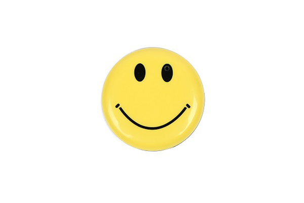

お子様やペットの撮影にオススメのカメラ

11月11日です！
11月ももうすぐ半分が終わり、一年の終わりが近づいてきたこの時期
皆さんいかがお過ごしでしょうか(^^♪
さて、当店で取り扱う小型カメラは、
「防犯対策」「いじめ・虐待等の証拠集め」「パワハラ・セクハラ対策」などなど・・・
様々な場面にお役立ていただける製品を200種類以上取り扱っています！
今回のブログでは小型カメラのトラブル対策だけではない、新しい使用方法をご提案いたします！
小さいお子様やペットの自然な表情を撮りたいのに、
いざカメラを向けると驚いてしまったり、
自然な笑顔が撮れなかったということはありませんか？
そんな方にオススメのカメラはこちら↓↓
オススメその①
【SPO-SMILE2】

スマイルバッヂに小型のカメラを内蔵！
なかなかお子様の自然な笑顔を撮れなかった・・・という経験のある方でも、
可愛らしい二コちゃんマークのデザインなので、カメラを向けたらむしろ笑顔になるかもしれません♪
カメラをTVに接続して頂きますと、TVの大画面で映像を確認しながら撮影する事も可能です！
本体の裏側はクリップになっており、バックなどに取り付けて撮影する事も出来ますので、
室内での撮影は勿論、追跡調査等にも活躍する優れもの！
1台あれば様々な用途にご使用いただけます。
SPO-SMILE2の詳細はこちら↓ ↓
≪ SPO-SMILE2 ≫
オススメその②
【SPO-TOY】
小さいお子様が大好きなおもちゃのブロックの形をしたカメラ！
なかなかカメラの方を見てくれないお子様でも、おもちゃなら気を引けるかもしれません・・・！
カラー撮影だけでなくモノクロ撮影も出来るユニークな機能もあり、
市場ではあまり見かけることのない、とってもレアな商品です♪
サイズは「縦30mm 横47mm 高さ20mm」とコンパクトですので、持ち運びにも便利！
見た目が可愛らしいので、女性の一人暮らしの防犯にも役立ちます。
商品のカラーは赤、緑、橙の3色からお選びください。
SPO-TOYシリーズの詳細はこちら↓ ↓
≪ SPO-TOYR（赤） ≫ ≪ SPO-TOYG（緑） ≫ ≪ SPO-TOYO（橙） ≫
オススメその③
【SPC-NGLA】
「カメラレンズが見つからない」優れたカモフラージュ性が人気のメガネ型カメラ！
かけた時にちょうど眉間の部分にカメラがありますので、見たままをそのまま撮影することが出来ます。
そのため、お子様やペットの自然な表情を撮り逃すことなく、バッチリ映像に残せちゃいます♪
カメラを持つことなく両手が空いた状態で撮影が出来ますので、
お子様やペットと触れ合いながらの撮影はもちろん、屋外でのアクティブな撮影も！！
アイデア次第で様々なシーンでご使用いただけます。
SPG-NGLAの詳細はこちら↓ ↓
≪ SPG-NGLA ≫
いかがでしたでしょうか・・・！
ご紹介した撮影方法以外にも、お客様次第で様々な使い方が出来ます。
ご使用の用途に合わせた商品をお選びください！
「こういう目的で使用したいんだけどどれがオススメ？」
「HP見たけどいっぱいあってどれにしたらいいかわからない・・・」
などなど・・・
メールやお電話でお気軽にご相談ください！
お客様のご要望に合った商品を精一杯ご提案させていただきます。
当店HPはコチラ↓↓からご覧いただけます！
【ＳＰＹ－ＯＮＬＩＮＥ－ＳＨＯＰ】

ご相談・ご質問はこちらから!!（店舗サイトのお問合せページへ飛びます）
mail：shop@spy-online.jp
tel：042-719-3319 (対応時間10：00～12：00、13：00～17：00)
今回はこの辺で…
次回更新をお楽しみに!(^^)!